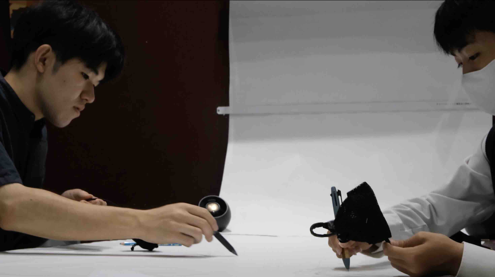
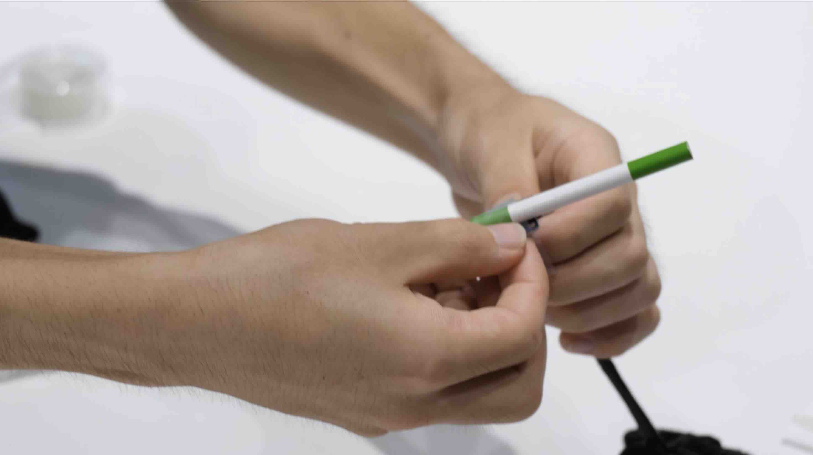
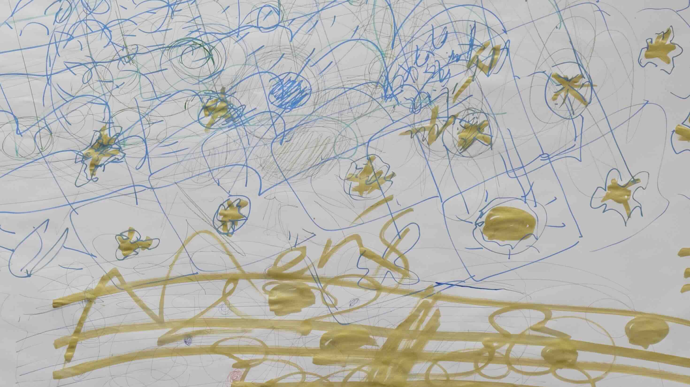
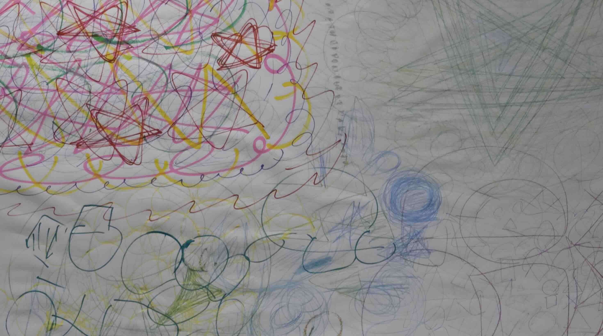
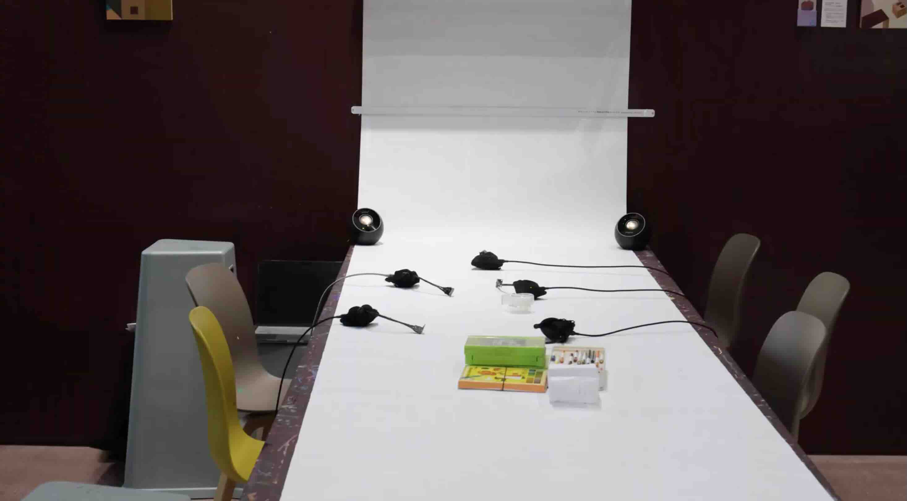

Work — 2026
線を聴く

背景・問い
Background「絵画を聴く」では、完成した絵の中に鳴っていたかもしれない音を想像して作曲してきた。 この考え方を、完成した作品ではなく「描いている最中」の身体の動きに向けたらどうなるか、 という問いから始まった実践である。
絵を見て解釈するのではなく、描く行為そのものを音に変換したら、鑑賞者は何を体感できるのか。 軌跡と音を同時に空間へ残すことで、その場にいなかった人にも制作の時間を追体験できるように したいと考えた。
作品について
The Workペンに加速度センサーを取り付け、その動きをリアルタイムで音に変換するワークショップ 「線を聴く」を、2026年7月30日にo-i studioで実施した。参加者は紙にペンを走らせながら、 その速度や強弱に応じて生成される音を同時に聴くことになる。ワークショップ終了後は、 その場で描かれた絵と生成された音をあわせて展示し、来場者がワークショップの時間を 追体験できるようにした。
ペン先に加速度センサーを取り付け、動きの速さや向きの変化をリアルタイムで取得した。 そのデータを独自に開発したWebアプリに送り、動きの強弱に応じて音の高さや音色が 変化するように作曲・プログラムした。装置と音の仕組みは「絵画を聴く」で培った、絵の 構図に応じて音を変化させる発想を、静止した絵から動くドローイングへと応用したもので ある。
使用機材
Hardware：ペン型加速度センサー／Software：Max/MSP、独自Webアプリ（加速度センサーの データをMax/MSPでリアルタイム処理し、Webアプリと連携して音の高さ・音色に変換）
写真
Photos



